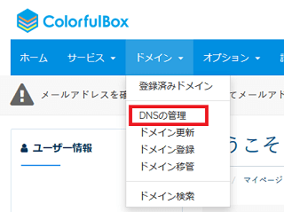
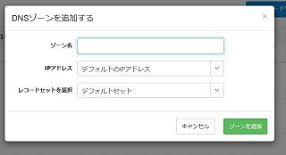
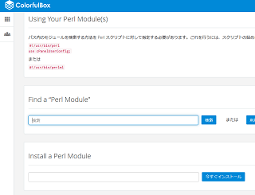

カラフルボックスはLiteSpeed採用の高速サーバー
カラフルボックスは、最新のSSDに加え、サーバーソフトに次世代「LiteSpeed」が採用されている高速なレンタルサーバーです。
→ カラフルボックス
このLiteSpeedについては、ApacheやNginxと比較するとサーバーソフトとしてのシェアはまだ低いですが、WordPressを高速化できることで注目されはじめています。LiteSpeedのサーバーでWordPressを利用したい方は、こちらのカラフルボックスを選択されるとよいでしょう。
料金プランには月額528円（税込）から8プラン（BOX1～BOX8）あり、全プランでマルチドメイン対応、データベースも無制限、COMODO社の無料独自SSLにも対応しています。
また、東日本と西日本の地域別に自動バックアップされるため、災害時などのデータ消失リスクにも対応しています。加えて、成人向けサイトの場合は完全に別サーバーとなっているため、企業サイトでも安心して利用することができます。
管理画面は日本語対応の「cPanel」となっていますが、公式サイトにてマニュアルが充実しているため、 初心者の方でも安心して利用することができます。
ドメインの設定には「DNSゾーンの登録」が必要
カラフルボックスにてドメインを設定する際、「DNSゾーンの登録」も必要になります。
一般的なレンタルサーバーの場合、DNSゾーンの設定は必要ないケースも多いですが、こちらを設定しておかないとサイトが表示されないので注意しましょう。
ネームサーバーの設定（※ドメイン管理会社にて）
→ アドオンドメイン（※cPanel管理画面）
→ DNSゾーンの登録（※カラフルボックスのログイン画面）
cPanel側の「アドオンドメイン」にてドメインを追加した後、カラフルボックスの管理画面の「DNSの管理」からDNSゾーンの登録をする必要があります。

詳細な設定方法については公式サイトのマニュアルに書いてますので、そちらを参考に設定されることをおすすめします。

順序については、どのみちDNSの設定が反映されるまで時間がかかるため、DNSゾーンの登録のあとにアドオンドメインの追加をしても特に問題はないかと思います。
「HTTP」にて運営する際の無料独自SSLの自動設定について
カラフルボックスでは「COMODO社」の無料独自SSLに対応しており、ドメインを追加すると自動でSSLが設定される仕様になっています。そのため、サイトを常時SSL化して「HTTPS」で運営する際には便利で使いやすい機能です。
けれども、「HTTP」にて運営したい場合でも、自動設定により「HTTPS」ページへのアクセスが可能な状態となってしまうため注意が必要です。
両方でのアクセスが可能な場合、GoogleではHTTPSページを優先してインデックスするとの情報があり、意図せずにHTTPSページがインデックスされてしまう可能性があります。結果として、検索エンジン経由のアクセスがHTTPSページへとランディングしてしまい、混合コンテンツによって「保護されていないページ」などの表示がされてしまうかもしれません。
そのため、「HTTP」にて運営している既存サイトをカラフルボックスへと移転させる場合、「.htaccess」にて「HTTPS」から「HTTP」ページへリダイレクトしておくことをおすすめします。
公式サイトのヘルプページにて「.htaccess」の具体的な記述方法が掲載されていますので、そちらを参考にされるとよいでしょう。
■SSL自動設定の無効化について
当サイト運営者の場合、リダイレクトではなく、SSLの設定自体を無効にしたかったため、問い合わせたところ、以下のような手順でAutoSSLを無効化できるとのことでした。
①無料SSLにて発行されている該当のドメインの証明書を削除
→ cPanelの「SSL/TLS」にて「SSLサイトを管理します」を選択したのち、「SSL ホストの管理」画面にて該当の証明書をアンインストールして削除する
②無料SSLの自動反映処理を無効化
→ cPanelの「SSL/TLS Status」から、該当のドメインについて「AutoSSLから除外する」を選択し、自動SSL設定を無効化する
どちらかというと、「HTTPS」から「HTTP」ページへリダイレクトするよりも、SSL自体を無効化してしまう方がよいかもしれません。
ちなみに、FTP接続をすると「.well-known」の見慣れないフォルダがありますが、こちらがSSL関連のフォルダになるため削除しないようにしましょう。
「MovableType」をインストールした際のレビュー
WordPressについては自動インストール機能がありますが、当サイト運営者はMovableTypeを手動でインストールしましたので、その手順についてレビューしたいと思います。
まず、FTP接続でMTのファイルをアップロードした後、インストールチェックをするかと思いますが、この段階で必要なモジュールが不足していると出てくるはずです。そのため、このモジュールについては、cPanelの「ソフトウェア - Perlモジュール」の箇所からインストールする必要があります。
「DBD::mysql」のモジュールだけでもMTのインストールはできますが、実際にはこれだけではうまく動作しないため、不足しているモジュールをほぼ全て入れることをおすすめします。

「GD」を検索してもいろいろな種類がありますが、「Install a Perl Module」の箇所から直接インストールするとうまくいきました。「Image::Magick」だけは入りませんでしたが、特に問題なく動作しています。
注意点としましては、このインストール画面の赤字の箇所にあるとおり、「cgiファイル」の１行目のパスを書き換える必要があります。
#!/usr/bin/perl
use cPanelUserConfig;
アップロードする際、CGIファイルの属性を「755」などに変更するプロセスがありますが、それらのCGIファイルのパスを全てこれに書き換えます。１行目については特に変わらないため、２行目だけを追加すればうまくいくはずです。
修正したCGIファイルをアップロードしたのち、再度チェックをすれば、インストール可能と出てくるはずです。上記のように、MovableTypeについてはモジュールのインストールが難しいかと思いますが、カラフルボックスでも利用することは可能でした。
FTP接続によるファイルのアップロードには時間がかかりましたが、LiteSpeedのサーバーのためか、静的なMovableTypeでも再構築やサイトの表示が快適と感じています。
個人向け格安レンタルサーバー
- エックスサーバー （高機能・人気・おすすめ・無料SSL）
- さくらインターネット （格安・人気・老舗・無料SSL）
- お名前.comサーバー （GMOグループ・人気・無料SSL）
- ロリポップ！ （初心者向け・人気・格安・無料SSL）
- コアサーバー （高機能・上級者向け・無料SSL）
- ヘテムル （無料SSL）
- スターサーバー （格安・無料SSL）
- XREA （格安・老舗・無料SSL）
- グーペ （お店向け・無料SSL）
- ConoHa WING（コノハ ウィング） （高速・無料SSL）
- mixhost （LiteSpeed・成人向け可・無料SSL）
- カラフルボックス （LiteSpeed・cPanel・無料SSL）
- WebARENA（ウェブアリーナ） （格安・老舗・無料SSL）
- Z.comレンタルサーバー （高速・格安SSL）
- リトルサーバー （格安・無料SSL）
- ABLENET（エイブルネット） （格安・老舗）
- エクストリム （格安・無料SSL）
- JSNレンタルサーバー （格安・老舗・無料SSL）
- Fc2 lite （格安・無料SSL）
- マイサーバー1000 （無料SSL）
- クイッカ （IP分散・cPanel）
- ドメインキング （Plesk）
- ＠ＷＡＰＰＹ （格安・Plesk）
- ハッスル （格安）